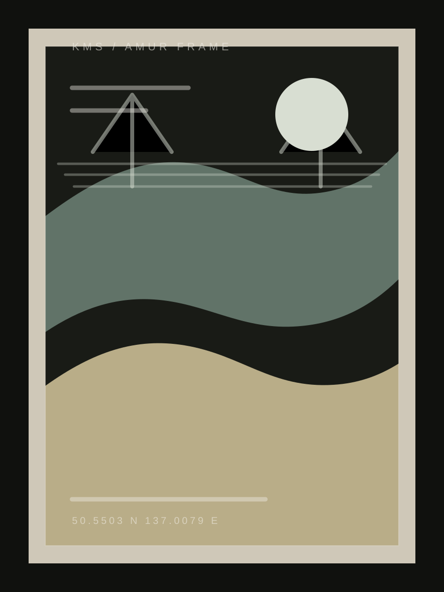
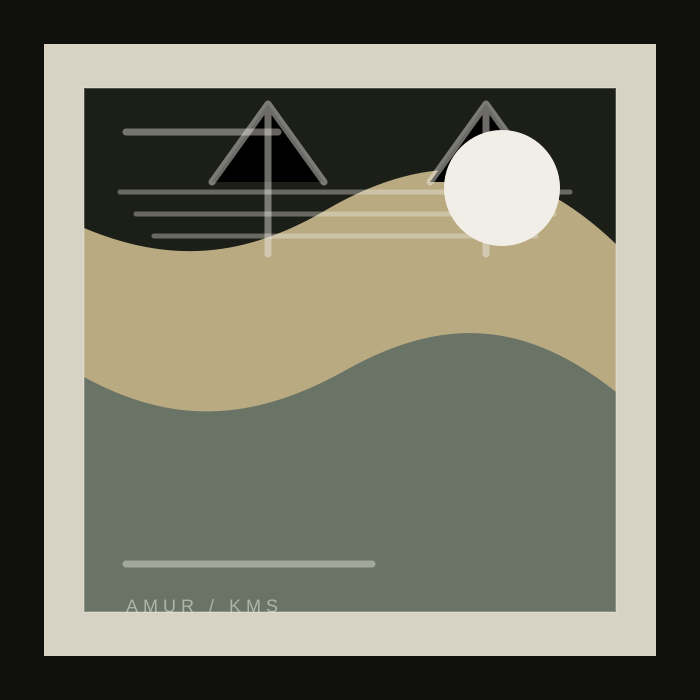

Портреты
Спокойный кадр, где человек узнаёт себя, а не позу.
photographer / Komsomolsk-on-Amur
Портреты, события и живые кадры без лишней постановки.
Снимаю людей так, чтобы на фото оставался не только кадр, но и состояние.


фотографии будут настоящими
work / approach
Мне важно, чтобы человек в кадре не играл роль, а оставался собой: меньше напряжения, больше диалога, движения и момента.
Спокойный кадр, где человек узнаёт себя, а не позу.
Близость, движение и маленькие детали без одинаковых сценариев.
Репортажно: люди, атмосфера, детали и то, как всё ощущалось.
Маршрут, свет, разговор и живые кадры по дороге.
Личные, чистые фотографии для профиля, проекта или бренда.
Без жесткого сценария: тепло, быт, близость и настоящие реакции.
Когда хочется собрать настроение, образ или небольшую историю.
Команда, процесс, пространство, экспертность и визуал для сайта.
Аккуратные кадры продукта для соцсетей, каталога или карточек.
Серия кадров на месяц: портреты, детали, предметка и backstage.
Можно прислать 5-10 примеров: свет, позы, цвета, ракурсы, настроение.
Подготовьте чистые образцы, упаковку, фактуры и список обязательных кадров.
Лучше заранее понять форматы: аватар, посты, сторис, Reels-обложки.
guide / choose format
Если нет готового ТЗ, можно оттолкнуться от задачи. Так быстрее понять формат, объем кадров и то, что реально важно на съемке.
Когда нужны живые фотографии без сложного сценария.
Команда, процесс, пространство, товар и визуал для доверия.
Чистые кадры продукта для сайта, соцсетей или карточек.
Атмосфера, люди, детали и моменты, которые не повторить.
formats / no fixed price
Это не жесткий прайс, а ориентиры по масштабу. Финальный формат зависит от даты, задачи, локаций и объема отдачи.
Короткая съемка с одним фокусом: портрет, товар или небольшая серия.
Набор кадров под профиль, посты, сторис, обложки и регулярный контент.
Визуал для сайта, каталога, команды, продукта или экспертного проекта.
Съемка события с вниманием к людям, атмосфере, деталям и ключевым моментам.
estimate / what affects price
Один и тот же “час съемки” может быть разным по подготовке и ответственности. Эти пункты помогают заранее оценить объем.
01 длительность съемки и количество локаций
02 число людей, товаров или сцен в кадре
03 срочность, дата и съемочное окно
04 помощь с идеей, образом, moodboard и подготовкой
05 коммерческое использование и требования к формату
06 объем отбора, ретуши и итоговой отдачи
preparation / before message
Не нужно писать длинное ТЗ. Достаточно нескольких пунктов, чтобы Денис быстрее понял задачу и предложил нормальный формат.
availability / limited shooting days
Денис берет съемки ограниченными окнами: примерно 15 дней в месяц доступны для проектов, остальные даты лучше согласовывать заранее. Так проще держать спокойный темп и качество подготовки.
brief / message builder
Выберите подходящие варианты, а в финале появится читаемый отчет с эмодзи: его можно скопировать и отправить Денису.
contact / real frames soon
Можно прийти без готовой идеи. Достаточно написать пару слов — дальше разберёмся вместе.